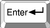

| Purchase | Copyright © 2002 Paul Sheer. Click here for copying permissions. | Home |
|
|
| |
In the previous chapter we talked about communication between machines in a generic sense. However, when you have two applications on opposite sides of the Atlantic Ocean, being able to send a packet that may or may not reach the other side is not sufficient. What you need is reliable communication.
Ideally, a programmer wants to be able to establish a link to a remote machine and then feed bytes in one at a time and be sure that the bytes are being read on the other end, and vice-versa. Such communication is called reliable stream communication.
If your only tools are discrete, unreliable packets, implementing a reliable, continuous stream is tricky. You can send single packets and then wait for the remote machine to confirm receipt, but this approach is inefficient (packets can take a long time to get to and from their destination)--you really want to be able to send as many packets as possible at once and then have some means of negotiating with the remote machine when to resend packets that were not received. What TCP (Transmission Control Protocol) does is to send data packets one way and then acknowledgment packets the other way, saying how much of the stream has been properly received.
We therefore say that TCP is implemented on top of IP. This is why Internet communication is sometimes called TCP/IP.
TCP communication has three stages: negotiation, transfer, and detachment. [This is all my own terminology. This is also somewhat of a schematic representation.]
TCP packets are obviously encapsulated within IP packets. The TCP packet is inside the Data begins at... part of the IP packet. A TCP packet has a header part and a data part. The data part may sometimes be empty (such as in the negotiation stage).
Table 26.1 shows the full TCP/IP header.
The minimum combined TCP/IP header is thus 40 bytes.
With Internet machines, several applications often communicate simultaneously. The Source port and Destination port fields identify and distinguish individual streams. In the case of web communication, the destination port (from the clients point of view) is port 80, and hence all outgoing traffic will have the number 80 filled in this field. The source port (from the client's point of view) is chosen randomly to any unused port number above 1024 before the connection is negotiated; these, too, are filled into outgoing packets. No two streams have the same combinations of source and destination port numbers. The kernel uses the port numbers on incoming packets to determine which application requires those packets, and similarly for the remote machine.
Sequence number is the offset within the stream that this particular packet of data belongs to. The Acknowledge number is the point in the stream up to which all data has been received. Control is various other flag bits. Window is the maximum amount that the receiver is prepared to accept. Checksum is used to verify data integrity, and Urgent pointer is for interrupting the stream. Data needed by extensions to the protocol are appended after the header as options.
It is easy to see TCP working by using telnet. You are probably familiar with using telnet to log in to remote systems, but telnet is actually a generic program to connect to any TCP socket as we did in Chapter 10. Here we will try connect to cnn.com's web page.
We first need to get an IP address of cnn.com:
|
[root@cericon]# host cnn.comcnn.com has address 207.25.71.20 |
Now, in one window we run
|
[root@cericon]# tcpdump \'( src 192.168.3.9 and dst 207.25.71.20 ) or ( src 207.25.71.20 and dst 192.168.3.9 )'Kernel filter, protocol ALL, datagram packet sockettcpdump: listening on all devices |
which says to list all packets having source ( src) or destination ( dst) addresses of either us or CNN.
Then we use the HTTP protocol to grab the page. Type in the HTTP command GET / HTTP/1.0 and then press  twice (as required by the HTTP protocol). The first and last few lines of the sessions are shown below:
5 10 15 20 25 30 |
[root@cericon root]# telnet 207.25.71.20 80Trying 207.25.71.20...Connected to 207.25.71.20.Escape character is '^]'.GET / HTTP/1.0 HTTP/1.0 200 OKServer: Netscape-Enterprise/2.01Date: Tue, 18 Apr 2000 10:55:14 GMTSet-cookie: CNNid=cf19472c-23286-956055314-2; expires=Wednesday, 30-Dec-2037 16:00:00 GMT; path=/; domain=.cnn.comLast-modified: Tue, 18 Apr 2000 10:55:14 GMTContent-type: text/html <HTML><HEAD> <TITLE>CNN.com</TITLE> <META http-equiv="REFRESH" content="1800"> <!--CSSDATA:956055234--> <SCRIPT src="/virtual/2000/code/main.js" language="javascript"></SCRIPT> <LINK rel="stylesheet" href="/virtual/2000/style/main.css" type="text/css"> <SCRIPT language="javascript" type="text/javascript"> <!--// if ((navigator.platform=='MacPPC')&&(navigator.ap ............................ </BODY></HTML>Connection closed by foreign host. |
The above commands produce the front page of CNN's web site in raw HTML. This is easy to paste into a file and view off-line.
In the other window, tcpdump is showing us what packets are being exchanged. tcpdump nicely shows us host names instead of IP addresses and the letters www instead of the port number 80. The local ``random'' port in this case was 4064.
5 10 15 20 25 30 35 40 45 50 55 60 65 |
[root@cericon]# tcpdump \'( src 192.168.3.9 and dst 207.25.71.20 ) or ( src 207.25.71.20 and dst 192.168.3.9 )'Kernel filter, protocol ALL, datagram packet sockettcpdump: listening on all devices12:52:35.467121 eth0 > cericon.cranzgot.co.za.4064 > www1.cnn.com.www: S 2463192134:2463192134(0) win 32120 <mss 1460,sackOK,timestamp 154031689 0,nop,wscale 012:52:35.964703 eth0 < www1.cnn.com.www > cericon.cranzgot.co.za.4064: S 4182178234:4182178234(0) ack 2463192135 win 10136 <nop,nop,timestamp 1075172823 15403112:52:35.964791 eth0 > cericon.cranzgot.co.za.4064 > www1.cnn.com.www: . 1:1(0) ack 1 win 32120 <nop,nop,timestamp 154031739 1075172823> (DF)12:52:46.413043 eth0 > cericon.cranzgot.co.za.4064 > www1.cnn.com.www: P 1:17(16) ack 1 win 32120 <nop,nop,timestamp 154032784 1075172823> (DF)12:52:46.908156 eth0 < www1.cnn.com.www > cericon.cranzgot.co.za.4064: . 1:1(0) ack 17 win 10136 <nop,nop,timestamp 1075173916 154032784>12:52:49.259870 eth0 > cericon.cranzgot.co.za.4064 > www1.cnn.com.www: P 17:19(2) ack 1 win 32120 <nop,nop,timestamp 154033068 1075173916> (DF)12:52:49.886846 eth0 < www1.cnn.com.www > cericon.cranzgot.co.za.4064: P 1:278(277) ack 19 win 10136 <nop,nop,timestamp 1075174200 154033068>12:52:49.887039 eth0 > cericon.cranzgot.co.za.4064 > www1.cnn.com.www: . 19:19(0) ack 278 win 31856 <nop,nop,timestamp 154033131 1075174200> (DF)12:52:50.053628 eth0 < www1.cnn.com.www > cericon.cranzgot.co.za.4064: . 278:1176(898) ack 19 win 10136 <nop,nop,timestamp 1075174202 154033068>12:52:50.160740 eth0 < www1.cnn.com.www > cericon.cranzgot.co.za.4064: P 1176:1972(796) ack 19 win 10136 <nop,nop,timestamp 1075174202 154033068>12:52:50.220067 eth0 > cericon.cranzgot.co.za.4064 > www1.cnn.com.www: . 19:19(0) ack 1972 win 31856 <nop,nop,timestamp 154033165 1075174202> (DF)12:52:50.824143 eth0 < www1.cnn.com.www > cericon.cranzgot.co.za.4064: . 1972:3420(1448) ack 19 win 10136 <nop,nop,timestamp 1075174262 154033131>12:52:51.021465 eth0 < www1.cnn.com.www > cericon.cranzgot.co.za.4064: . 3420:4868(1448) ack 19 win 10136 <nop,nop,timestamp 1075174295 154033165> ............................ 12:53:13.856919 eth0 > cericon.cranzgot.co.za.4064 > www1.cnn.com.www: . 19:19(0) ack 53204 win 30408 <nop,nop,timestamp 154035528 1075176560> (DF)12:53:14.722584 eth0 < www1.cnn.com.www > cericon.cranzgot.co.za.4064: . 53204:54652(1448) ack 19 win 10136 <nop,nop,timestamp 1075176659 154035528>12:53:14.722738 eth0 > cericon.cranzgot.co.za.4064 > www1.cnn.com.www: . 19:19(0) ack 54652 win 30408 <nop,nop,timestamp 154035615 1075176659> (DF)12:53:14.912561 eth0 < www1.cnn.com.www > cericon.cranzgot.co.za.4064: . 54652:56100(1448) ack 19 win 10136 <nop,nop,timestamp 1075176659 154035528>12:53:14.912706 eth0 > cericon.cranzgot.co.za.4064 > www1.cnn.com.www: . 19:19(0) ack 58500 win 30408 <nop,nop,timestamp 154035634 1075176659> (DF)12:53:15.706463 eth0 < www1.cnn.com.www > cericon.cranzgot.co.za.4064: . 58500:59948(1448) ack 19 win 10136 <nop,nop,timestamp 1075176765 154035634>12:53:15.896639 eth0 < www1.cnn.com.www > cericon.cranzgot.co.za.4064: . 59948:61396(1448) ack 19 win 10136 <nop,nop,timestamp 1075176765 154035634>12:53:15.896791 eth0 > cericon.cranzgot.co.za.4064 > www1.cnn.com.www: . 19:19(0) ack 61396 win 31856 <nop,nop,timestamp 154035732 1075176765> (DF)12:53:16.678439 eth0 < www1.cnn.com.www > cericon.cranzgot.co.za.4064: . 61396:62844(1448) ack 19 win 10136 <nop,nop,timestamp 1075176864 154035732>12:53:16.867963 eth0 < www1.cnn.com.www > cericon.cranzgot.co.za.4064: . 62844:64292(1448) ack 19 win 10136 <nop,nop,timestamp 1075176864 154035732>12:53:16.868095 eth0 > cericon.cranzgot.co.za.4064 > www1.cnn.com.www: . 19:19(0) ack 64292 win 31856 <nop,nop,timestamp 154035829 1075176864> (DF)12:53:17.521019 eth0 < www1.cnn.com.www > cericon.cranzgot.co.za.4064: FP 64292:65200(908) ack 19 win 10136 <nop,nop,timestamp 1075176960 154035829>12:53:17.521154 eth0 > cericon.cranzgot.co.za.4064 > www1.cnn.com.www: . 19:19(0) ack 65201 win 31856 <nop,nop,timestamp 154035895 1075176960> (DF)12:53:17.523243 eth0 > cericon.cranzgot.co.za.4064 > www1.cnn.com.www: F 19:19(0) ack 65201 win 31856 <nop,nop,timestamp 154035895 1075176960> (DF)12:53:20.410092 eth0 > cericon.cranzgot.co.za.4064 > www1.cnn.com.www: F 19:19(0) ack 65201 win 31856 <nop,nop,timestamp 154036184 1075176960> (DF)12:53:20.940833 eth0 < www1.cnn.com.www > cericon.cranzgot.co.za.4064: . 65201:65201(0) ack 20 win 10136 <nop,nop,timestamp 1075177315 154035895> 103 packets received by filter |
The preceding output requires some explanation: Line 5, 7, and 9 are the negotiation stage. tcpdump uses the format <Sequence number>:<Sequence number + data length>(<data length>) on each line to show the context of the packet within the stream. Sequence number, however, is chosen randomly at the outset, so tcpdump prints the relative sequence number after the first two packets to make it clearer what the actual position is within the stream. Line 11 is where I pressed Enter the first time, and Line 15 was Enter with an empty line. The `` ack 19''s indicates the point to which CNN's web server has received incoming data; in this case we only ever typed in 19 bytes, hence the web server sets this value in every one of its outgoing packets, while our own outgoing packets are mostly empty of data.
Lines 61 and 63 are the detachment stage.
More information about the tcpdump output can be had from tcpdump(8) under the section TCP Packets.
You don't always need reliable communication.
Sometimes you want to directly control packets for efficiency, or because you don't really mind if packets get lost. Two examples are name server communications, for which single packet transmissions are desired, or voice transmissions for which reducing lag time is more important than data integrity. Another is NFS (Network File System), which uses UDP to implement exclusively high bandwidth data transfer.
With UDP the programmer sends and receives individual packets, again encapsulated within IP. Ports are used in the same way as with TCP, but these are merely identifiers and there is no concept of a stream. The full UDP/IP header is listed in Table 26.2.
Various standard port numbers are used exclusively for particular types of services. Port 80 is for web as shown earlier. Port numbers 1 through 1023 are reserved for such standard services and each is given a convenient textual name.
All services are defined for both TCP as well as UDP, even though there is, for example, no such thing as UDP FTP access.
Port numbers below 1024 are used exclusively for root uid programs such as mail, DNS, and web services. Programs of ordinary users are not allowed to bind to ports below 1024. [Port binding is where a program reserves a port for listening for an incoming connection, as do all network services. Web servers, for example, bind to port 80.]The place where these ports are defined is in the /etc/services file. These mappings are mostly for descriptive purposes--programs can look up port names from numbers and visa versa. The /etc/services file has nothing to do with the availability of a service.
Here is an extract of the /etc/services.
5 10 15 20 25 30 35 |
tcpmux 1/tcp # TCP port service multiplexerecho 7/tcpecho 7/udpdiscard 9/tcp sink nulldiscard 9/udp sink nullsystat 11/tcp usersdaytime 13/tcpdaytime 13/udpnetstat 15/tcpqotd 17/tcp quotemsp 18/tcp # message send protocolmsp 18/udp # message send protocolftp-data 20/tcpftp 21/tcpfsp 21/udp fspdssh 22/tcp # SSH Remote Login Protocolssh 22/udp # SSH Remote Login Protocoltelnet 23/tcpsmtp 25/tcp mailtime 37/tcp timservertime 37/udp timserverrlp 39/udp resource # resource locationnameserver 42/tcp name # IEN 116whois 43/tcp nicnamedomain 53/tcp nameserver # name-domain serverdomain 53/udp nameservermtp 57/tcp # deprecatedbootps 67/tcp # BOOTP serverbootps 67/udpbootpc 68/tcp # BOOTP clientbootpc 68/udptftp 69/udpgopher 70/tcp # Internet Gophergopher 70/udprje 77/tcp netrjsfinger 79/tcpwww 80/tcp http # WorldWideWeb HTTPwww 80/udp # HyperText Transfer Protocol |
The TCP stream can easily be reconstructed by anyone listening on a wire who happens to see your network traffic, so TCP is known as an inherently insecure service. We would like to encrypt our data so that anything captured between the client and server will appear garbled. Such an encrypted stream should have several properties:
The above is relatively easily accomplished with at least two packages. Take the example where we would like to use POP3 to retrieve mail from a remote machine. First, we can verify that POP3 is working by logging in on the POP3 server. Run a telnet to port 110 (i.e., the POP3 service) as follows:
5 |
telnet localhost 110Connected to localhost.localdomain.Escape character is '^]'.+OK POP3 localhost.localdomain v7.64 server readyQUIT+OK SayonaraConnection closed by foreign host. |
For our first example, we use the OpenSSH package. We can initialize and run the sshd Secure Shell daemon if it has not been initialized before. The following commands would be run on the POP3 server:
|
ssh-keygen -b 1024 -f /etc/ssh/ssh_host_key -q -N ''ssh-keygen -d -f /etc/ssh/ssh_host_dsa_key -q -N ''sshd |
To create an encrypted channel shown in Figure 26.1, we use the ssh client login program in a special way. We would like it to listen on a particular TCP port and then encrypt and forward all traffic to the remote TCP port on the server. This is known as (encrypted) port forwarding. On the client machine we choose an arbitrary unused port to listen on, in this case 12345:
|
ssh -C -c arcfour -N -n -2 -L 12345:<pop3-server.doma.in>:110 \ <pop3-server.doma.in> -l <user> -v |
where <user> is the name of a shell account on the POP3 server. Finally, also on the client machine, we run:
5 |
telnet localhost 12345Connected to localhost.localdomain.Escape character is '^]'.+OK POP3 localhost.localdomain v7.64 server readyQUIT+OK SayonaraConnection closed by foreign host. |
Here we get results identical to those above, because, as far as the server is concerned, the POP3 connection comes from a client on the server machine itself, unknowing of the fact that it has originated from sshd, which in turn is forwarding from a remote ssh client. In addition, the -C option compresses all data (useful for low-speed connections). Also note that you should generally never use any encryption besides arcfour and SSH Protocol 2 (option -2).
The second method is the forward program of the mirrordir package. It has a unique encryption protocol that does much of what OpenSSH can, although the protocol has not been validated by the community at large (and therefore should be used with caution). On the server machine you can just type secure-mcserv. On the client run
|
forward <user>@<pop3-server.doma.in> <pop3-server.doma.in>:110 \ 12345 --secure -z -K 1024 |
and then run telnet 12345 to test as before.
With forwarding enabled you can use any POP3 client as you normally would. Be sure, though, to set your host and port addresses to localhost and 12345 within your POP3 client.
This example can, of course, be applied to almost any service. Some services will not work if they do special things like create reverse TCP connections back to the client (for example, FTP). Your luck may vary.